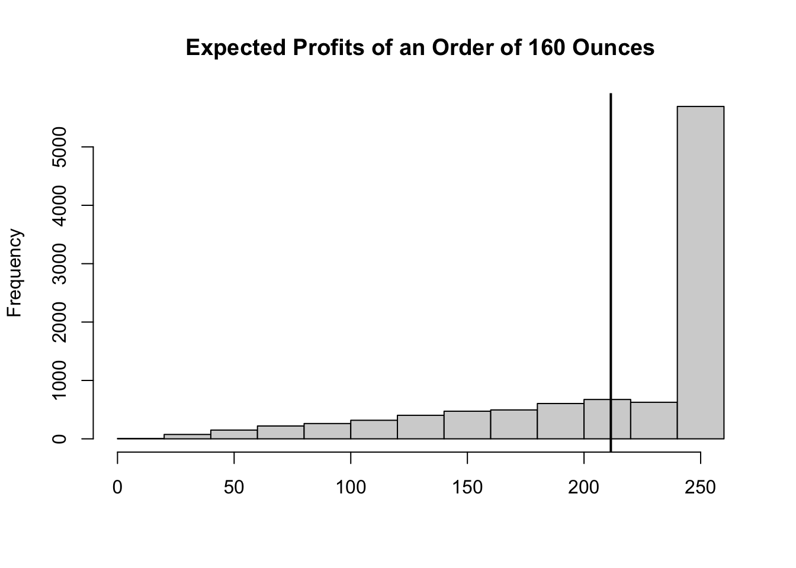

library(extraDistr)
Order_Oz<-160 # Decision Variable
Price_Fish_Oz<-9/16 # Input
Price_Miso<-300 # Input
Entry_Fee<-20 # Input
Fish_Entitled_Oz<-5 #Input
set.seed(20)
Attendance<-round(rtriang(1,20,50,30),0) # Random Variable
Consumption<-Attendance*Fish_Entitled_Oz # Calculated
Available<-Order_Oz # Calculated
Profit<-min(Consumption,Available)/Fish_Entitled_Oz*Entry_Fee-Order_Oz*Price_Fish_Oz-Price_Miso #Outcome2 Simulation in R
In this module we will build our first business simulation model using R. We will start by identifying and defining the parts of the model as this provides the basic structure. We will then iterate our model several times so that we can obtain the distribution of expected outcomes. Finally, we will modify some of the model’s inputs, so that we can check the robustness of our results.
2.1 Roll With It Sushi Needs Your Help
Renowned for serving the freshest sushi in the city, Roll With It Sushi is hosting a yellow-tail festival. Every morning, the Sous-Chef purchases fish at the market and any unsold fish at the end of the day gets discarded.
The restaurant has contacted you because they are still determining how many people will attend the event and worry about how this will impact their business financially. To ensure they have enough sushi and budget appropriately, they want you to recommend the amount of fish needed. Based on past events, they expect at least 20 people to attend and have the capacity to seat up to 50 guests. They anticipate the most likely attendance to be around 30 people, and without your guidance they feel like this is the best guide in determining the fish needed.
Roll With It Sushi can purchase any quantity of yellow-tail from the fresh market at 9 dollars for 16 ounces (divisible). Each guest at the festival is entitled to 5 ounces of fish. If the sushi runs out, some customers will not be happy. However, the restaurant has promised to refund their entry fee. Additionally, they have promised to serve their famous Miso soup to every attendee. The cost of making a batch for up to 50 guests is 300 dollars.
Given that the festival charges 20 dollars per entry, how much yellow-tail would you recommend the restaurant to purchase to maximize expected profits?
2.2 Model Framework
The restaurant provides you with a lot of information which might be overwhelming at first glance. To make the task less daunting, we should organize/classify the information so that we can create a model. In general, for many business problems, the data can be classified into the following parts:
The inputs have given fixed values and provide the model’s basic structure. These are values that are most likely to be given and determined.
The decision variables are values the decision maker controls. We are usually interested in finding the optimal level of this variable.
The calculated values transform inputs and decision variables to other values that help describe our model. These make the model more informative and often are required to derive outputs.
The random variables are the primary source of uncertainty in the model. They are often modeled by sampling probability distributions.
The outputs are the ultimate values of interest; the inputs, decision variables, random variables, or calculated values determine them.
Below, you can see how we can classify and input the information in R.
In the model above, you can see how the inputs have fixed values. These values were given to us by the restaurant and it seems like the they have little or no control over them (the market price of the fish, the cost of making Miso soup, etc.). The random variable, captures the source of uncertainty (i.e., how many people attend the event). As you can see we have used here the rtraing() function from the extraDistr package to generate the attendance. We have chosen the triangle distribution since the restaurant has provided us with a lower limit, an upper limit, and a most likely case for attendance. Note also the use of the set.seed() function. This allows you to replicate the random numbers generated.
The calculated variables combine inputs, the decision variable, and the random variable to provide insight on how much is fish is expected to be both consumed and available. They also help us determine the output, which is our main guide in knowing whether the decision of ordering \(x\) ounces of fish is the “best”.
2.3 The News Vendor Problem
Note how the decision variable (Order_Oz) affects directly our outcome (Profit). We can see that it decreases the restaurant’s profit through costs, but also affects revenue through the amount of fish available. This is the heart of the problem. We don’t know how many people will attend, so if the restaurant orders too much fish their profits will go down because their costs are large. However, if they order too little then they will have to issue refunds, which decrease their revenue. How much fish should be ordered?
The problem illustrated above is called the news vendor problem. The news vendor problem is a classic decision-making problem in operations research and economics that involves deciding how much of a product to order (and sometimes at what price to sell it). The problem is called the “news vendor” problem because it was originally used to model the decision-making process of a newspaper vendor trying to decide how many copies of a newspaper to order and at what price to sell them.
2.4 Law of Large Numbers
Before we answer the question of how much fish to order, we must realize a couple of flaws of the model we have created. Mainly, we have run the simulation once and it is unlikely (although possible) that the attendance will be exactly \(44\). Instead, we want to provide the restaurant with a set of eventualities. Worst case scenarios (low attendance), best case scenarios (high attendance), most likely outcomes for their decision. This is only possible if we generate several attendance numbers, and see how the output behaves.
An additional problem is that if we provide an average profit generated by our model, we want to make sure that the average is not biased. Recall that as the sample size of a study increases, the average of the sample will converge towards the true population mean. In other words, as the number of observations increases, the estimate of the population mean becomes more and more accurate. This is known as the Law of Large Numbers.
The code below repeats the simulation not once, or twice, but several times. Although, there is not a set number of times one should run a simulation to get a good estimate of the mean (or distribution), computers are powerful enough to run thousands if not millions of simulations. Below we run the simulation 10,000 times for illustration purposes.
n<-10000
V_Order_Oz<-rep(Order_Oz,n)
V_Price_Fish_Oz<-rep(Price_Fish_Oz,n)
V_Price_Miso<-rep(Price_Miso,n)
V_Entry_Fee<-rep(Entry_Fee,n)
V_Fish_Entitled_Oz<-rep(Fish_Entitled_Oz,n)
set.seed(12)
V_Attendance<-round(rtriang(n,20,50,30),0)
Consumption<-V_Attendance*V_Fish_Entitled_Oz
Available<-V_Order_Oz
V_Profit<-pmin(Consumption,Available)/V_Fish_Entitled_Oz*V_Entry_Fee-V_Order_Oz*V_Price_Fish_Oz-V_Price_Miso2.5 Recommendation
There are a couple of things that are now evident. It seems likely that the restaurant would make on average a profit of about 234 dollars if they order 160 ounces of fish. We can now inform the restaurant that it is likely they will make a profit if they order 160 ounces. There are a couple of questions left unanswered. First, 234 dollars are expected of profits, what are the other possible outcomes when ordering 160 ounces? Secondly, is there another amount of fish that would give them a higher expected profit?
To answer the first question we can generate a histogram of all the results of our simulation model. We can then report this to the restaurant and make them aware of all of the possible outcomes of ordering 160 ounces of fish. Below, we show the histogram of our model’s outcomes.
hist(V_Profit, main="Expected Profits of an Order of 160 Ounces",
xlab="")
abline(v=mean(V_Profit), lwd=2)
As you can see most of the outcomes are close to 250 dollars. So a better recommendation to the restaurant would be to inform them that when ordering 160 ounces, they will most likely get a profit of 250 dollars. There is a small risk of them making less that 100 dollars, but that they should not expect more than 250 dollars. The average in this case seems to be a poor predictor of what is expected as its frequency is not very large as shown in the histogram. This result is commonly known as the flaw of averages.
The flaw of averages, also known as the “law of averages fallacy,” is the idea that the average value of a particular characteristic in a population can be used to represent the value of that characteristic for individual members of the population. This is often not the case because the average value can be misleading and does not take into account the variability and distribution of the characteristic within the population.
Now to answer the main question, what should be the amount ordered of fish? To answer this question we will substitute several possible order options into our model and then retrieve the one that gives us the highest expected profit. We can easily do this in R with a loop. Below is the code:
Order_Oz=seq(160,240,10)
Price_Fish_Oz<-9/16 # Input
Price_Miso<-300 # Input
Entry_Fee<-20 # Input
Fish_Entitled_Oz<-5 #Input
Profits<-c()
for (i in Order_Oz){
n<-10000
V_Order_Oz<-rep(i,n)
V_Price_Fish_Oz<-rep(Price_Fish_Oz,n)
V_Price_Miso<-rep(Price_Miso,n)
V_Entry_Fee<-rep(Entry_Fee,n)
V_Fish_Entitled_Oz<-rep(Fish_Entitled_Oz,n)
V_Attendance<-round(rtriang(n,20,50,30),0) # Random Variable
Consumption<-V_Attendance*V_Fish_Entitled_Oz # Calculated
Available<-V_Order_Oz # Calculated
V_Profit<-pmin(Consumption,Available)/V_Fish_Entitled_Oz*V_Entry_Fee-V_Order_Oz*V_Price_Fish_Oz-V_Price_Miso
Profits<-c(Profits,mean(V_Profit))
}
(results<-data.frame(Order=Order_Oz,Profits=Profits)) Order Profits
1 160 212.934
2 170 225.413
3 180 235.406
4 190 241.335
5 200 242.848
6 210 243.837
7 220 240.640
8 230 234.759
9 240 230.9582.6 The Flaw of Averages
The flaw of averages, also known as the “law of averages fallacy,” is the idea that the average value of a particular characteristic in a population can be used to represent the value of that characteristic for individual members of the population. This is often not the case because the average value can be misleading and does not take into account the variability and distribution of the characteristic within the population. For example, if a group of people has an average height of 5’10”, it does not mean that every individual in the group is exactly 5’10” tall. Some people may be shorter, while others may be taller. The flaw of averages can lead to inaccurate assumptions and incorrect conclusions, particularly when making predictions or decisions based on the average value. It is important to consider the distribution and variability of the characteristic within the population when making predictions or decisions, rather than relying solely on the average value.
2.7 Sensitivity Analysis
Sensitivity analysis is a tool used in decision-making to assess the robustness of a model or decision by evaluating the impact of changes in certain key input variables on the output of the model or decision. Sensitivity analysis helps to identify which variables are most important and how sensitive the output is to changes in those variables. It is often used in financial, economic, and engineering contexts to evaluate the feasibility and risk of different scenarios or to identify potential areas of improvement.
There are several types of sensitivity analysis, including one-way sensitivity analysis, which involves varying one input variable at a time while holding all other variables constant, and two-way sensitivity analysis, which involves varying two input variables simultaneously. Sensitivity analysis can also be used to evaluate the uncertainty of the output by analyzing the range of possible outcomes given different assumptions about the input variables.
Sensitivity analysis is a useful tool for decision-makers because it helps to identify the key drivers of the model or decision and allows for a more informed and comprehensive analysis of the potential risks and benefits. However, it is important to note that sensitivity analysis is only as reliable as the assumptions and data used in the model, and it should be used in conjunction with other tools and techniques to provide a more complete understanding of the problem at hand.